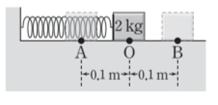
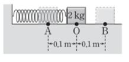

문제:
30. 그림은 마찰이 없는 수평면에서 용수철 상수가 200N/m인 용수철에 연결된 질량이 2kg인 물체가 평형점 O를 중심으로 점 A와 점 B 사이를 진동하는 모습을 나타낸 것이다. (단, 물체의 크기, 용수철의 질량, 공기 저항은 무시한다.)
30. 그림은 마찰이 없는 수평면에서 용수철 상수가 200N/m인 용수철에 연결된 질량이 2kg인 물체가 평형점 O를 중심으로 점 A와 점 B 사이를 진동하는 모습을 나타낸 것이다. (단, 물체의 크기, 용수철의 질량, 공기 저항은 무시한다.)
